Redlining¶
Exploring the Impact of Historical Redlining on Urban Greenspace: A Collaborative Examination of Maps, Justice, and Resilience¶
Introduction¶
This group exploration delves into the long-term impacts of historical redlining on urban greenspace, emphasizing the powerful role of maps in shaping environmental and social landscapes. By drawing on the research by Nardone et al. (2021), you will collaboratively investigate how discriminatory practices encoded in maps have led to persistent disparities in urban settings. This exploration aims to uncover the resilience of communities in adapting to these entrenched injustices and to foster a deeper understanding of how mapping can serve both as a tool of exclusion and as a means for promoting social equity.
 )
)
Understanding Redlining as a Systemic Disturbance¶
Redlining originated in the 1930s as a discriminatory practice where the Home Owners’ Loan Corporation (HOLC) systematically denied mortgages or offered unfavorable terms based on racial and ethnic compositions. This methodical exclusion, executed through maps that color-coded “risky” investment areas in red, marked minority-populated areas, denying them crucial investment and development opportunities and initiating a profound and lasting disturbance in the urban fabric.
Maps serve as powerful tools beyond navigation; they communicate and enforce control. By defining neighborhood boundaries through redlining, HOLC maps not only mirrored societal biases but also perpetuated and embedded them into the urban landscape. This manipulation of geographic data set a trajectory that limited economic growth, dictated the allocation of services, and influenced the development or deterioration of community infrastructure.
Figure 1: 1938 Map of Atlanta uses colors as grades for neighborhoods. The red swaths identify each area with large African-American populations that were deemed “less safe.”
ArcGIS Story Map
Explore the Story Map: Click on the image above to explore the interactive story map about [subject of the story map].
Resilience and Adaptation in Urban Environments¶
The legacy of redlining presents both a challenge and an opportunity for resilience and adaptation. Economically and socially, redlining entrenched cycles of poverty and racial segregation, creating a resilient wealth gap that has been difficult to dismantle. Environmentally, the neighborhoods targeted by redlining continue to face significant challenges—they generally feature less greenspace, suffer from higher pollution levels, and are more vulnerable to the impacts of climate change. These factors compound the health and wellness challenges faced by residents.
Despite these adversities, urban communities have continually demonstrated remarkable resilience. Adaptation strategies, such as community-led green initiatives, urban agriculture, and grassroots activism, have emerged as responses to these systemic disturbances. By enhancing green infrastructure and advocating for equitable environmental policies, these communities strive to increase their resilience against both historical inequities and environmental challenges.

Watch the video
Video Title: Exploring the Impacts of Historical Redlining on Urban
Development
Description: Click on the image above to watch a video that delves
into the consequences of historical redlining and its ongoing impact on
urban environments. This educational piece offers insights into how such
discriminatory practices have shaped cities and what can be learned from
them.
The following group exercise will not only uncover the impact of redlining on urban greenspace but also highlight the adaptive strategies developed in response to this enduring disturbance. Through mapping and analysis, we aim to illustrate the powerful role that geographic data can play in understanding and fostering urban resilience and social equity.
References¶
- Nardone, A., Rudolph, K. E., Morello-Frosch, R., & Casey, J. A. (2021). Redlines and Greenspace: The Relationship between Historical Redlining and 2010 Greenspace across the United States. Environmental Health Perspectives, 129(1), 017006. DOI:10.1289/EHP7495.
- Hoffman, J. S., Shandas, V., & Pendleton, N. (2020). The Effects of Historical Housing Policies on Resident Exposure to Intra-Urban Heat: A Study of 108 US Urban Areas. Climate, 8(1), 12. DOI:10.3390/cli8010012.
Goals of this group activity¶
The primary objectives of this tutorial are: 1. To practice coding in CyVerse. 2. To analyze the relationship between HOLC grades and the presence of urban greenspace. 3. To understand how historic policies continue to affect the spatial distribution of environmental amenities.
Part 1: Accessing and Visualizing Historic Redlining Data¶
We will begin by accessing HOLC maps from the Mapping Inequality project and overlaying this data with modern geographic datasets to visualize the historical impact on contemporary urban landscapes.
Data Acquisition¶
- Download HOLC map shapefiles from the University of Richmond’s Mapping Inequality Project.
- Utilize satellite imagery and other geospatial data to map current greenspace using the normalized difference vegetation index (NDVI).
Analysis Methodology¶
- Replicate the approach used by Nardone et al. to calculate NDVI values for each HOLC neighborhood, assessing greenspace as a health-promoting resource.
- Employ statistical methods such as propensity score matching to control for confounding variables and estimate the true impact of HOLC grades on urban greenspace.
R libraries we use in this analysis
if (!requireNamespace("tidytext", quietly = TRUE)) {
install.packages("tidytext")
}
library(tidytext)
## Warning: package 'tidytext' was built under R version 4.3.2
library(sf)
## Warning: package 'sf' was built under R version 4.3.2
## Linking to GEOS 3.11.0, GDAL 3.5.3, PROJ 9.1.0; sf_use_s2() is TRUE
library(ggplot2)
## Warning: package 'ggplot2' was built under R version 4.3.2
library(ggthemes)
## Warning: package 'ggthemes' was built under R version 4.3.2
library(dplyr)
##
## Attaching package: 'dplyr'
## The following objects are masked from 'package:stats':
##
## filter, lag
## The following objects are masked from 'package:base':
##
## intersect, setdiff, setequal, union
library(rstac)
## Warning: package 'rstac' was built under R version 4.3.2
library(gdalcubes)
## Warning: package 'gdalcubes' was built under R version 4.3.2
library(gdalUtils)
## Please note that rgdal will be retired during October 2023,
## plan transition to sf/stars/terra functions using GDAL and PROJ
## at your earliest convenience.
## See https://r-spatial.org/r/2023/05/15/evolution4.html and https://github.com/r-spatial/evolution
## rgdal: version: 1.6-7, (SVN revision 1203)
## Geospatial Data Abstraction Library extensions to R successfully loaded
## Loaded GDAL runtime: GDAL 3.5.3, released 2022/10/21
## Path to GDAL shared files: /Library/Frameworks/R.framework/Versions/4.3-x86_64/Resources/library/rgdal/gdal
## GDAL does not use iconv for recoding strings.
## GDAL binary built with GEOS: TRUE
## Loaded PROJ runtime: Rel. 9.1.0, September 1st, 2022, [PJ_VERSION: 910]
## Path to PROJ shared files: /Library/Frameworks/R.framework/Versions/4.3-x86_64/Resources/library/gdalcubes/proj
## PROJ CDN enabled: FALSE
## Linking to sp version:1.6-1
## To mute warnings of possible GDAL/OSR exportToProj4() degradation,
## use options("rgdal_show_exportToProj4_warnings"="none") before loading sp or rgdal.
##
## Attaching package: 'gdalUtils'
## The following object is masked from 'package:sf':
##
## gdal_rasterize
library(gdalcubes)
library(colorspace)
library(terra)
## Warning: package 'terra' was built under R version 4.3.2
## terra 1.7.71
##
## Attaching package: 'terra'
## The following object is masked from 'package:colorspace':
##
## RGB
## The following objects are masked from 'package:gdalcubes':
##
## animate, crop, size
library(tidyterra)
##
## Attaching package: 'tidyterra'
## The following object is masked from 'package:stats':
##
## filter
library(basemapR)
library(tidytext)
library(ggwordcloud)
library(osmextract)
## Data (c) OpenStreetMap contributors, ODbL 1.0. https://www.openstreetmap.org/copyright.
## Check the package website, https://docs.ropensci.org/osmextract/, for more details.
library(sf)
library(ggplot2)
library(ggthemes)
library(glue)
##
## Attaching package: 'glue'
## The following object is masked from 'package:terra':
##
## trim
library(purrr)
FUNCTION: List cities where HOLC data are available
# Function to get a list of unique cities and states from the redlining data
get_city_state_list_from_redlining_data <- function() {
# URL to the GeoJSON data
url <- "https://raw.githubusercontent.com/americanpanorama/mapping-inequality-census-crosswalk/main/MIv3Areas_2010TractCrosswalk.geojson"
# Read the GeoJSON file into an sf object
redlining_data <- tryCatch({
read_sf(url)
}, error = function(e) {
stop("Error reading GeoJSON data: ", e$message)
})
# Check for the existence of 'city' and 'state' columns
if (!all(c("city", "state") %in% names(redlining_data))) {
stop("The required columns 'city' and/or 'state' do not exist in the data.")
}
# Extract a unique list of city and state pairs without the geometries
city_state_df <- redlining_data %>%
select(city, state) %>%
st_set_geometry(NULL) %>% # Drop the geometry to avoid issues with invalid shapes
distinct(city, state) %>%
arrange(state, city ) # Arrange the list alphabetically by state, then by city
# Return the dataframe of unique city-state pairs
return(city_state_df)
}
Stream list of available HOLC cities
#Retrieve the list of cities and states
city_state_list <- get_city_state_list_from_redlining_data()
knitr::kable(city_state_list, format = "markdown")
FUNCTION: Stream HOLC data from a city
# Function to load and filter redlining data by city
load_city_redlining_data <- function(city_name) {
# URL to the GeoJSON data
url <- "https://raw.githubusercontent.com/americanpanorama/mapping-inequality-census-crosswalk/main/MIv3Areas_2010TractCrosswalk.geojson"
# Read the GeoJSON file into an sf object
redlining_data <- read_sf(url)
# Filter the data for the specified city and non-empty grades
city_redline <- redlining_data %>%
filter(city == city_name )
# Return the filtered data
return(city_redline)
}
Stream HOLC data for Denver, CO
# Load redlining data for Denver
denver_redlining <- load_city_redlining_data("Denver")
knitr::kable(head(denver_redlining), format = "markdown")
FUNCTION: Get Points-of-Interest from city of interest
get_places <- function(polygon_layer, type = "food" ) {
# Check if the input is an sf object
if (!inherits(polygon_layer, "sf")) {
stop("The provided object is not an sf object.")
}
# Create a bounding box from the input sf object
bbox_here <- st_bbox(polygon_layer) |>
st_as_sfc()
if(type == "food"){
my_layer <- "multipolygons"
my_query <- "SELECT * FROM multipolygons WHERE (
shop IN ('supermarket', 'bodega', 'market', 'other_market', 'farm', 'garden_centre', 'doityourself', 'farm_supply', 'compost', 'mulch', 'fertilizer') OR
amenity IN ('social_facility', 'market', 'restaurant', 'coffee') OR
leisure = 'garden' OR
landuse IN ('farm', 'farmland', 'row_crops', 'orchard_plantation', 'dairy_grazing') OR
building IN ('brewery', 'winery', 'distillery') OR
shop = 'greengrocer' OR
amenity = 'marketplace'
)"
title <- "food"
}
if (type == "processed_food") {
my_layer <- "multipolygons"
my_query <- "SELECT * FROM multipolygons WHERE (
amenity IN ('fast_food', 'cafe', 'pub') OR
shop IN ('convenience', 'supermarket') OR
shop = 'kiosk'
)"
title <- "Processed Food Locations"
}
if(type == "natural_habitats"){
my_layer <- "multipolygons"
my_query <- "SELECT * FROM multipolygons WHERE (
boundary = 'protected_area' OR
natural IN ('tree', 'wood') OR
landuse = 'forest' OR
leisure = 'park'
)"
title <- "Natural habitats or City owned trees"
}
if(type == "roads"){
my_layer <- "lines"
my_query <- "SELECT * FROM lines WHERE (
highway IN ('motorway', 'trunk', 'primary', 'secondary', 'tertiary') )"
title <- "Major roads"
}
if(type == "rivers"){
my_layer <- "lines"
my_query <- "SELECT * FROM lines WHERE (
waterway IN ('river'))"
title <- "Major rivers"
}
if(type == "internet_access") {
my_layer <- "multipolygons"
my_query <- "SELECT * FROM multipolygons WHERE (
amenity IN ('library', 'cafe', 'community_centre', 'public_building') AND
internet_access = 'yes'
)"
title <- "Internet Access Locations"
}
if(type == "water_bodies") {
my_layer <- "multipolygons"
my_query <- "SELECT * FROM multipolygons WHERE (
natural IN ('water', 'lake', 'pond') OR
water IN ('lake', 'pond') OR
landuse = 'reservoir'
)"
title <- "Water Bodies"
}
if(type == "government_buildings") {
my_layer <- "multipolygons"
my_query <- "SELECT * FROM multipolygons WHERE (
amenity IN ('townhall', 'courthouse', 'embassy', 'police', 'fire_station') OR
building IN ('capitol', 'government')
)"
title <- "Government Buildings"
}
# Use the bbox to get data with oe_get(), specifying the desired layer and a custom SQL query for fresh food places
tryCatch({
places <- oe_get(
place = bbox_here,
layer = my_layer, # Adjusted layer; change as per actual data availability
query = my_query,
quiet = TRUE
)
places <- st_make_valid(places)
# Crop the data to the bounding box
cropped_places <- st_crop(places, bbox_here)
# Plotting the cropped fresh food places
plot <- ggplot(data = cropped_places) +
geom_sf(fill="cornflowerblue", color="cornflowerblue") +
ggtitle(title) +
theme_tufte()+
theme(legend.position = "none", # Optionally hide the legend
axis.text = element_blank(), # Remove axis text
axis.title = element_blank(), # Remove axis titles
axis.ticks = element_blank(), # Remove axis ticks
plot.background = element_rect(fill = "white", color = NA), # Set the plot background to white
panel.background = element_rect(fill = "white", color = NA), # Set the panel background to white
panel.grid.major = element_blank(), # Remove major grid lines
panel.grid.minor = element_blank(),
)
# Save the plot as a PNG file
png_filename <- paste0(title,"_", Sys.Date(), ".png")
ggsave(png_filename, plot, width = 10, height = 8, units = "in")
# Return the cropped dataset
return(cropped_places)
}, error = function(e) {
stop("Failed to retrieve or plot data: ", e$message)
})
}
FUNCTION: Plot POI over HOLC grades
plot_city_redlining <- function(redlining_data, filename = "redlining_plot.png") {
# Fetch additional geographic data based on redlining data
roads <- get_places(redlining_data, type = "roads")
rivers <- get_places(redlining_data, type = "rivers")
# Filter residential zones with valid grades and where city survey is TRUE
residential_zones <- redlining_data %>%
filter(city_survey == TRUE & grade != "")
# Colors for the grades
colors <- c("#76a865", "#7cb5bd", "#ffff00", "#d9838d")
# Plot the data using ggplot2
plot <- ggplot() +
geom_sf(data = roads, lwd = 0.1) +
geom_sf(data = rivers, color = "blue", alpha = 0.5, lwd = 1.1) +
geom_sf(data = residential_zones, aes(fill = grade), alpha = 0.5) +
theme_tufte() +
scale_fill_manual(values = colors) +
labs(fill = 'HOLC Categories') +
theme(
plot.background = element_rect(fill = "white", color = NA),
panel.background = element_rect(fill = "white", color = NA),
panel.grid.major = element_blank(),
panel.grid.minor = element_blank(),
legend.position = "right"
)
# Save the plot as a high-resolution PNG file
ggsave(filename, plot, width = 10, height = 8, units = "in", dpi = 600)
# Return the plot object if needed for further manipulation or checking
return(plot)
}
Plot Denver Redlining
denver_plot <- plot_city_redlining(denver_redlining)
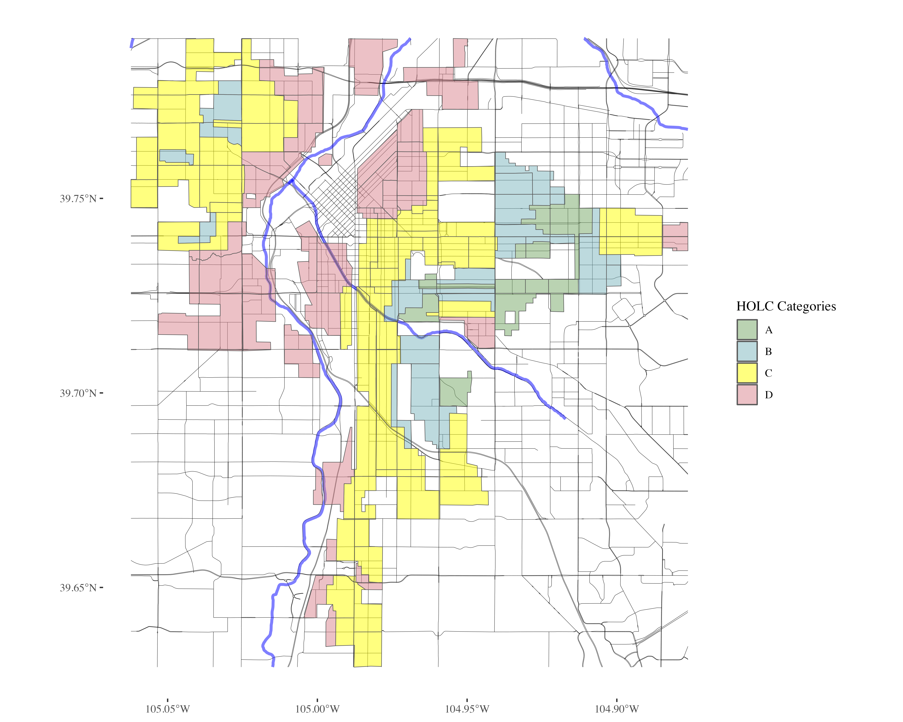
Stream amenities by category
food <- get_places(denver_redlining, type="food")
food_processed <- get_places(denver_redlining, type="processed_food")
natural_habitats <- get_places(denver_redlining, type="natural_habitats")
roads <- get_places(denver_redlining, type="roads")
rivers <- get_places(denver_redlining, type="rivers")
#water_bodies <- get_places(denver_redlining, type="water_bodies")
government_buildings <- get_places(denver_redlining, type="government_buildings")
FUNCTION: Plot the HOLC grades individually
split_plot <- function(sf_data, roads, rivers) {
# Filter for grades A, B, C, and D
sf_data_filtered <- sf_data %>%
filter(grade %in% c('A', 'B', 'C', 'D'))
# Define a color for each grade
grade_colors <- c("A" = "#76a865", "B" = "#7cb5bd", "C" = "#ffff00", "D" = "#d9838d")
# Create the plot with panels for each grade
plot <- ggplot(data = sf_data_filtered) +
geom_sf(data = roads, alpha = 0.1, lwd = 0.1) +
geom_sf(data = rivers, color = "blue", alpha = 0.1, lwd = 1.1) +
geom_sf(aes(fill = grade)) +
facet_wrap(~ grade, nrow = 1) + # Free scales for different zoom levels if needed
scale_fill_manual(values = grade_colors) +
theme_minimal() +
labs(fill = 'HOLC Grade') +
theme_tufte() +
theme(plot.background = element_rect(fill = "white", color = NA),
panel.background = element_rect(fill = "white", color = NA),
legend.position = "none", # Optionally hide the legend
axis.text = element_blank(), # Remove axis text
axis.title = element_blank(), # Remove axis titles
axis.ticks = element_blank(), # Remove axis ticks
panel.grid.major = element_blank(), # Remove major grid lines
panel.grid.minor = element_blank())
ggsave(plot, filename = "HOLC_grades_individually.png", width = 10, height = 4, units = "in", dpi = 1200)
return(plot)
}
Plot 4 HOLC grades individually
plot_row <- split_plot(denver_redlining, roads, rivers)

FUNCTION: Map an amenity over each grade individually
process_and_plot_sf_layers <- function(layer1, layer2, output_file = "output_plot.png") {
# Make geometries valid
layer1 <- st_make_valid(layer1)
layer2 <- st_make_valid(layer2)
# Optionally, simplify geometries to remove duplicate vertices
layer1 <- st_simplify(layer1, preserveTopology = TRUE) |>
filter(grade != "")
# Prepare a list to store results
results <- list()
# Loop through each grade and perform operations
for (grade in c("A", "B", "C", "D")) {
# Filter layer1 for current grade
layer1_grade <- layer1[layer1$grade == grade, ]
# Buffer the geometries of the current grade
buffered_layer1_grade <- st_buffer(layer1_grade, dist = 500)
# Intersect with the second layer
intersections <- st_intersects(layer2, buffered_layer1_grade, sparse = FALSE)
selected_polygons <- layer2[rowSums(intersections) > 0, ]
# Add a new column to store the grade information
selected_polygons$grade <- grade
# Store the result
results[[grade]] <- selected_polygons
}
# Combine all selected polygons from different grades into one sf object
final_selected_polygons <- do.call(rbind, results)
# Define colors for the grades
grade_colors <- c("A" = "grey", "B" = "grey", "C" = "grey", "D" = "grey")
# Create the plot
plot <- ggplot() +
geom_sf(data = roads, alpha = 0.05, lwd = 0.1) +
geom_sf(data = rivers, color = "blue", alpha = 0.1, lwd = 1.1) +
geom_sf(data = layer1, fill = "grey", color = "grey", size = 0.1) +
facet_wrap(~ grade, nrow = 1) +
geom_sf(data = final_selected_polygons,fill = "green", color = "green", size = 0.1) +
facet_wrap(~ grade, nrow = 1) +
#scale_fill_manual(values = grade_colors) +
#scale_color_manual(values = grade_colors) +
theme_minimal() +
labs(fill = 'HOLC Grade') +
theme_tufte() +
theme(plot.background = element_rect(fill = "white", color = NA),
panel.background = element_rect(fill = "white", color = NA),
legend.position = "none",
axis.text = element_blank(),
axis.title = element_blank(),
axis.ticks = element_blank(),
panel.grid.major = element_blank(),
panel.grid.minor = element_blank())
# Save the plot as a high-resolution PNG file
ggsave(output_file, plot, width = 10, height = 4, units = "in", dpi = 1200)
# Return the plot for optional further use
return(list(plot=plot, sf = final_selected_polygons))
}
FUNCTION: Create word cloud per grade
create_wordclouds_by_grade <- function(sf_object, output_file = "food_word_cloud_per_grade.png",title = "Healthy food place names word cloud", max_size =25, col_select = "name") {
# Extract relevant data and prepare text data
text_data <- sf_object %>%
select(grade, col_select) %>%
filter(!is.na(col_select)) %>%
unnest_tokens(output = "word", input = col_select, token = "words") %>%
count(grade, word, sort = TRUE) %>%
ungroup() %>%
filter(n() > 1) # Filter to remove overly common or single-occurrence words
# Ensure there are no NA values in the 'word' column
text_data <- text_data %>% filter(!is.na(word))
# Handle cases where text_data might be empty
if (nrow(text_data) == 0) {
stop("No data available for creating word clouds.")
}
# Create a word cloud using ggplot2 and ggwordcloud
p <- ggplot( ) +
geom_text_wordcloud_area(data=text_data, aes(label = word, size = n),rm_outside = TRUE) +
scale_size_area(max_size = max_size) +
facet_wrap(~ grade, nrow = 1) +
scale_color_gradient(low = "darkred", high = "red") +
theme_minimal() +
theme(plot.background = element_rect(fill = "white", color = NA),
panel.background = element_rect(fill = "white", color = NA),
panel.spacing = unit(0.5, "lines"),
plot.title = element_text(size = 16, face = "bold"),
legend.position = "none") +
labs(title = title)
# Attempt to save the plot and handle any errors
tryCatch({
ggsave(output_file, p, width = 10, height = 4, units = "in", dpi = 600)
}, error = function(e) {
cat("Error in saving the plot: ", e$message, "\n")
})
return(p)
}
Map food over each grade individually
layer1 <- denver_redlining
layer2 <- food
food_match <- process_and_plot_sf_layers(layer1, layer2, "food_match.png")

WORD CLOUD: Names of places with fresh food
food_word_cloud <- create_wordclouds_by_grade(food_match$sf, output_file = "food_word_cloud_per_grade.png")

Map processed food over each grade individually
layer1 <- denver_redlining
layer2 <- food_processed
processed_food_match <- process_and_plot_sf_layers(layer1, layer2, "processed_food_match.png")

WORD CLOUD: Names of places with processed food
processed_food_cloud <- create_wordclouds_by_grade(processed_food_match$sf, output_file = "processed_food_word_cloud_per_grade.png",title = "Processed food place names where larger text is more frequent", max_size =17)
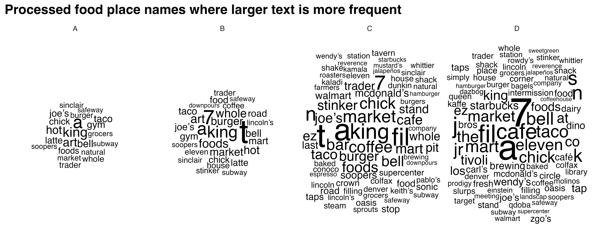
Part 2: Integrating Environmental Data¶
Data Processing¶
- Use satellite data from 2010 to analyze greenspace using NDVI, an index that measures the quantity of vegetation in an area.
- Apply methods to adjust for potential confounders as described in the study, ensuring that comparisons of greenspace across HOLC grades are valid and not biased by historical or socio-demographic factors.
Map natural habitats over each grade individually
layer1 <- denver_redlining
layer2 <- natural_habitats
natural_habitats_match <- process_and_plot_sf_layers(layer1, layer2, "natural_habitats_match.png")
print(natural_habitats_match$plot)

WORD CLOUD: Name of natural habitat area
natural_habitats_cloud <- create_wordclouds_by_grade(natural_habitats_match$sf, output_file = "natural_habitats_word_cloud_per_grade.png",title = "Natural habitats place names where larger text is more frequent", max_size =35)
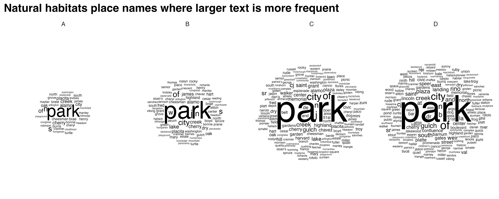
FUNCTION: Stream NDVI data
polygon_layer <- denver_redlining
# Function to process satellite data based on an SF polygon's extent
process_satellite_data <- function(polygon_layer, start_date, end_date, assets, fps = 1, output_file = "anim.gif") {
# Record start time
start_time <- Sys.time()
# Calculate the bbox from the polygon layer
bbox <- st_bbox(polygon_layer)
s = stac("https://earth-search.aws.element84.com/v0")
# Use stacR to search for Sentinel-2 images within the bbox and date range
items = s |> stac_search(
collections = "sentinel-s2-l2a-cogs",
bbox = c(bbox["xmin"], bbox["ymin"], bbox["xmax"], bbox["ymax"]),
datetime = paste(start_date, end_date, sep = "/"),
limit = 500
) %>%
post_request()
# Define mask for Sentinel-2 image quality
#S2.mask <- image_mask("SCL", values = c(3, 8, 9))
# Create a collection of images filtering by cloud cover
col <- stac_image_collection(items$features, asset_names = assets, property_filter = function(x) {x[["eo:cloud_cover"]] < 30})
# Define a view for processing the data
v <- cube_view(srs = "EPSG:4326",
extent = list(t0 = start_date, t1 = end_date,
left = bbox["xmin"], right = bbox["xmax"],
top = bbox["ymax"], bottom = bbox["ymin"]),
dx = 0.001, dy = 0.001, dt = "P1M",
aggregation = "median", resampling = "bilinear")
# Calculate NDVI and create an animation
ndvi_col <- function(n) {
rev(sequential_hcl(n, "Green-Yellow"))
}
#raster_cube(col, v, mask = S2.mask) %>%
raster_cube(col, v) %>%
select_bands(c("B04", "B08")) %>%
apply_pixel("(B08-B04)/(B08+B04)", "NDVI") %>%
gdalcubes::animate(col = ndvi_col, zlim = c(-0.2, 1), key.pos = 1, save_as = output_file, fps = fps)
# Calculate processing time
end_time <- Sys.time()
processing_time <- difftime(end_time, start_time)
# Return processing time
return(processing_time)
}
Stream NDVI data: animation
processing_time <- process_satellite_data(denver_redlining, "2022-05-31", "2023-05-31", c("B04", "B08"))
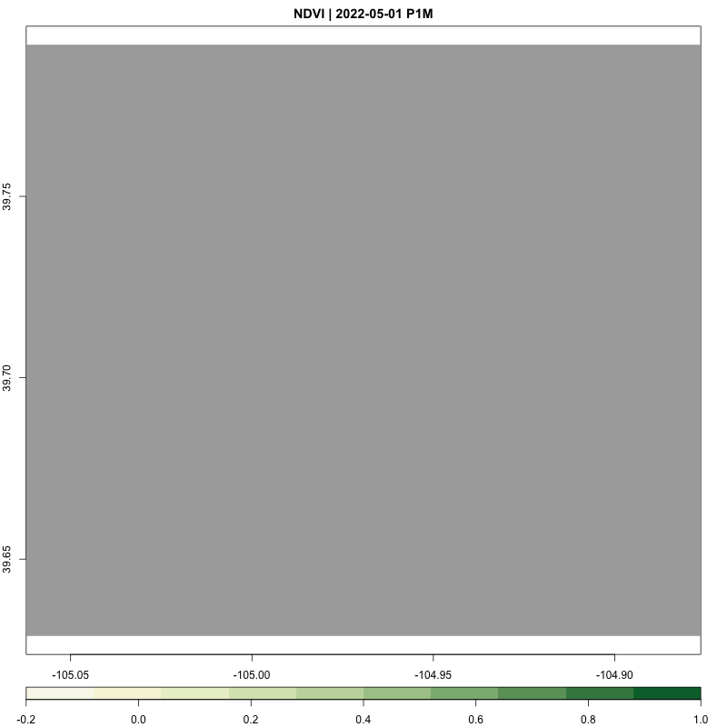
FUNCTION: Stream year average NDVI
yearly_average_ndvi <- function(polygon_layer, output_file = "ndvi.png", dx = 0.01, dy = 0.01) {
# Record start time
start_time <- Sys.time()
# Calculate the bbox from the polygon layer
bbox <- st_bbox(polygon_layer)
s = stac("https://earth-search.aws.element84.com/v0")
# Search for Sentinel-2 images within the bbox for June
items <- s |> stac_search(
collections = "sentinel-s2-l2a-cogs",
bbox = c(bbox["xmin"], bbox["ymin"], bbox["xmax"], bbox["ymax"]),
datetime = "2023-01-01/2023-12-31",
limit = 500
) %>%
post_request()
# Create a collection of images filtering by cloud cover
col <- stac_image_collection(items$features, asset_names = c("B04", "B08"), property_filter = function(x) {x[["eo:cloud_cover"]] < 80})
# Define a view for processing the data specifically for June
v <- cube_view(srs = "EPSG:4326",
extent = list(t0 = "2023-01-01", t1 = "2023-12-31",
left = bbox["xmin"], right = bbox["xmax"],
top = bbox["ymax"], bottom = bbox["ymin"]),
dx = dx, dy = dy, dt = "P1Y",
aggregation = "median", resampling = "bilinear")
# Process NDVI
ndvi_rast <- raster_cube(col, v) %>%
select_bands(c("B04", "B08")) %>%
apply_pixel("(B08-B04)/(B08+B04)", "NDVI") %>%
write_tif() |>
terra::rast()
# Convert terra Raster to ggplot using tidyterra
ndvi_plot <- ggplot() +
geom_spatraster(data = ndvi_rast, aes(fill = NDVI)) +
scale_fill_viridis_c(option = "viridis", direction = -1, name = "NDVI") +
labs(title = "NDVI mean for 2023") +
theme_minimal() +
coord_sf() +
theme(plot.background = element_rect(fill = "white", color = NA),
panel.background = element_rect(fill = "white", color = NA),
legend.position = "right",
axis.text = element_blank(),
axis.title = element_blank(),
axis.ticks = element_blank(),
panel.grid.major = element_blank(),
panel.grid.minor = element_blank())
# Save the plot as a high-resolution PNG file
ggsave(output_file, ndvi_plot, width = 10, height = 8, dpi = 600)
# Calculate processing time
end_time <- Sys.time()
processing_time <- difftime(end_time, start_time)
# Return the plot and processing time
return(list(plot = ndvi_plot, processing_time = processing_time, raster = ndvi_rast))
}
Stream NDVI: high resolution
ndvi_background <- yearly_average_ndvi(denver_redlining,dx = 0.0001, dy = 0.0001)
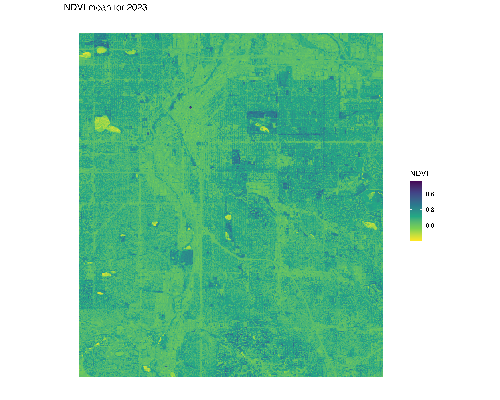
FUNCTION: Map NDVI per HOLC grade individually
create_mask_and_plot <- function(redlining_sf, background_raster = ndvi$raster, roads = NULL, rivers = NULL){
start_time <- Sys.time() # Start timing
# Validate and prepare the redlining data
redlining_sf <- redlining_sf %>%
filter(grade != "") %>%
st_make_valid()
bbox <- st_bbox(redlining_sf) # Get original bounding box
expanded_bbox <- expand_bbox(bbox, 6000, 1000) #
expanded_bbox_poly <- st_as_sfc(expanded_bbox, crs = st_crs(redlining_sf)) %>%
st_make_valid()
# Initialize an empty list to store masks
masks <- list()
# Iterate over each grade to create masks
unique_grades <- unique(redlining_sf$grade)
for (grade in unique_grades) {
# Filter polygons by grade
grade_polygons <- redlining_sf[redlining_sf$grade == grade, ]
# Create an "inverted" mask by subtracting these polygons from the background
mask <- st_difference(expanded_bbox_poly, st_union(grade_polygons))
# Store the mask in the list with the grade as the name
masks[[grade]] <- st_sf(geometry = mask, grade = grade)
}
# Combine all masks into a single sf object
mask_sf <- do.call(rbind, masks)
# Normalize the grades so that C.2 becomes C, but correctly handle other grades
mask_sf$grade <- ifelse(mask_sf$grade == "C.2", "C", mask_sf$grade)
# Prepare the plot
plot <- ggplot() +
geom_spatraster(data = background_raster, aes(fill = NDVI)) +
scale_fill_viridis_c(name = "NDVI", option = "viridis", direction = -1) +
geom_sf(data = mask_sf, aes(color = grade), fill = "white", size = 0.1, show.legend = FALSE) +
scale_color_manual(values = c("A" = "white", "B" = "white", "C" = "white", "D" = "white"), name = "Grade") +
facet_wrap(~ grade, nrow = 1) +
geom_sf(data = roads, alpha = 1, lwd = 0.1, color="white") +
geom_sf(data = rivers, color = "white", alpha = 0.5, lwd = 1.1) +
labs(title = "NDVI: Normalized Difference Vegetation Index") +
theme_minimal() +
coord_sf(xlim = c(bbox["xmin"], bbox["xmax"]),
ylim = c(bbox["ymin"], bbox["ymax"]),
expand = FALSE) +
theme(plot.background = element_rect(fill = "white", color = NA),
panel.background = element_rect(fill = "white", color = NA),
legend.position = "bottom",
axis.text = element_blank(),
axis.title = element_blank(),
axis.ticks = element_blank(),
panel.grid.major = element_blank(),
panel.grid.minor = element_blank())
# Save the plot
ggsave("redlining_mask_ndvi.png", plot, width = 10, height = 4, dpi = 600)
end_time <- Sys.time() # End timing
runtime <- end_time - start_time
# Return the plot and runtime
return(list(plot = plot, runtime = runtime, mask_sf = mask_sf))
}
Stream NDVI: low resolution
ndvi_background_low <- yearly_average_ndvi(denver_redlining)
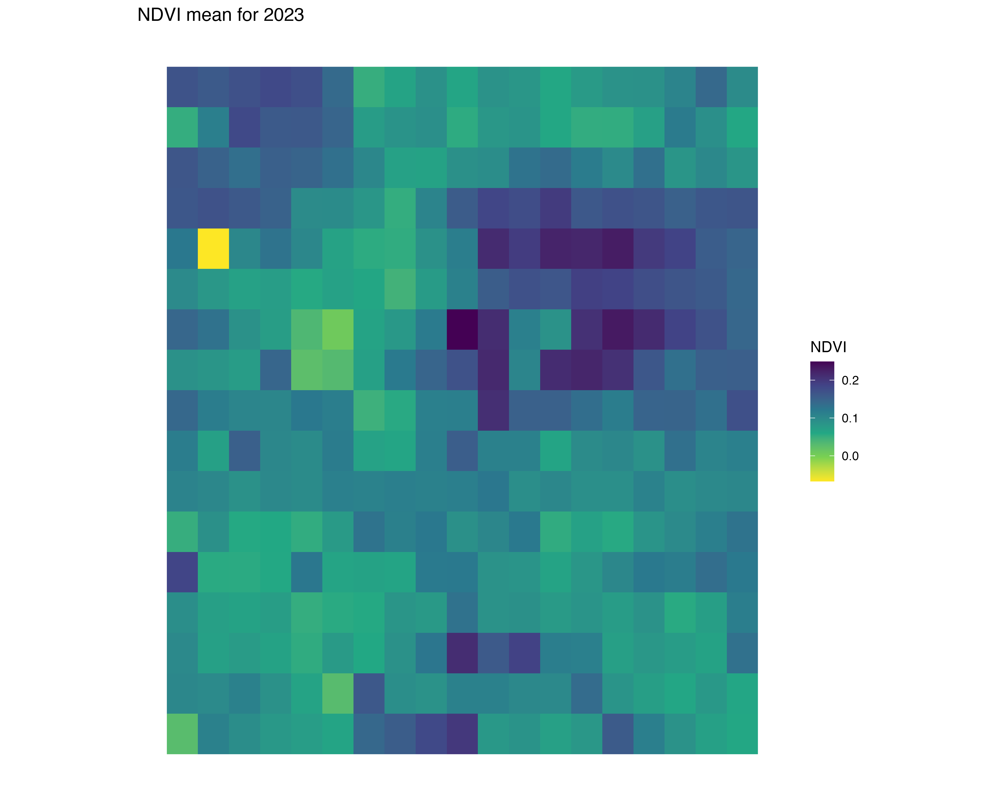
Map low resolution NDVI per HOLC grade
ndvi <- create_mask_and_plot(denver_redlining, background_raster = ndvi_background_low$raster, roads = roads, rivers = rivers)
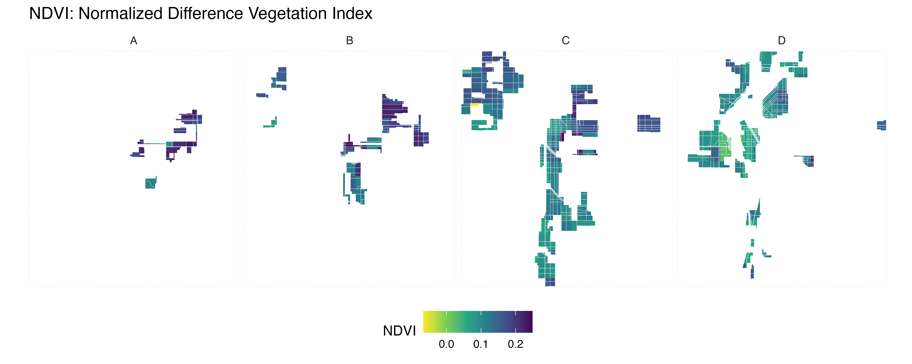
FUNCTION: Map Denver City provided data per HOLC grade
process_city_inventory_data <- function(address, inner_file, polygon_layer, output_filename,variable_label= 'Tree Density') {
# Download and read the shapefile
full_path <- glue("/vsizip/vsicurl/{address}/{inner_file}")
shape_data <- st_read(full_path, quiet = TRUE) |> st_as_sf()
# Process the shape data with the provided polygon layer
processed_data <- process_and_plot_sf_layers(polygon_layer, shape_data, paste0(output_filename, ".png"))
# Extract trees from the processed data
trees <- processed_data$sf
denver_redlining_residential <- polygon_layer |> filter(grade != "")
# Generate the density plot
plot <- ggplot() +
geom_sf(data = roads, alpha = 0.05, lwd = 0.1) +
geom_sf(data = rivers, color = "blue", alpha = 0.1, lwd = 1.1) +
geom_sf(data = denver_redlining_residential, fill = "grey", color = "grey", size = 0.1) +
facet_wrap(~ grade, nrow = 1) +
stat_density_2d(data = trees,
mapping = aes(x = map_dbl(geometry, ~.[1]),
y = map_dbl(geometry, ~.[2]),
fill = stat(density)),
geom = 'tile',
contour = FALSE,
alpha = 0.9) +
scale_fill_gradientn(colors = c("transparent", "white", "limegreen"),
values = scales::rescale(c(0, 0.1, 1)), # Adjust these based on your density range
guide = "colourbar") +
theme_minimal() +
labs(fill = variable_label) +
theme_tufte() +
theme(plot.background = element_rect(fill = "white", color = NA),
panel.background = element_rect(fill = "white", color = NA),
legend.position = "bottom",
axis.text = element_blank(),
axis.title = element_blank(),
axis.ticks = element_blank(),
panel.grid.major = element_blank(),
panel.grid.minor = element_blank())
# Save the plot
ggsave(paste0(output_filename, "_density_plot.png"), plot, width = 10, height = 4, units = "in", dpi = 600)
# Return the plot and the tree layer
return(list(plot = plot, layer = trees))
}
Map tree inventory per HOLC grade
result <- process_city_inventory_data(
"https://www.denvergov.org/media/gis/DataCatalog/tree_inventory/shape/tree_inventory.zip",
"tree_inventory.shp",
denver_redlining,
"Denver_tree_inventory_2023"
)
 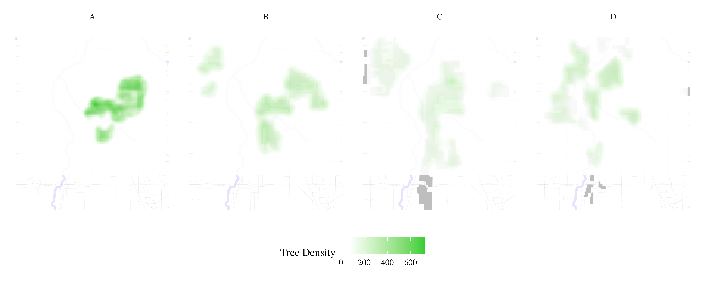
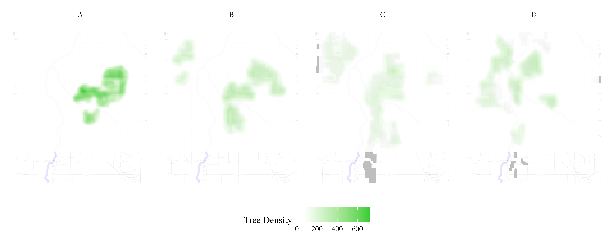
Map traffic accidents per HOLC grade
result <- process_city_inventory_data(
"https://www.denvergov.org/media/gis/DataCatalog/traffic_accidents/shape/traffic_accidents.zip",
"traffic_accidents.shp",
denver_redlining,
"Denver_traffic_accidents",
variable_label= 'Traffic accidents density'
)
 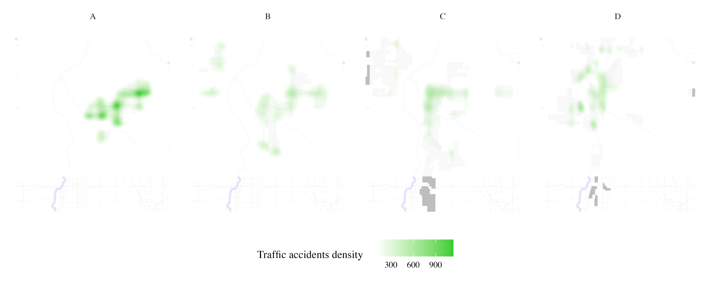
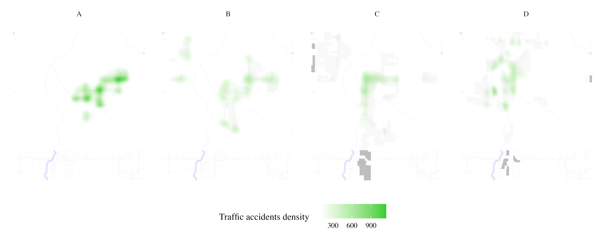
Map stream sampling effort per HOLC grade
instream_sampling_sites <- process_city_inventory_data(
"https://www.denvergov.org/media/gis/DataCatalog/instream_sampling_sites/shape/instream_sampling_sites.zip",
"instream_sampling_sites.shp",
denver_redlining,
"instream_sampling_sites",
variable_label= 'Instream sampling sites density'
)
 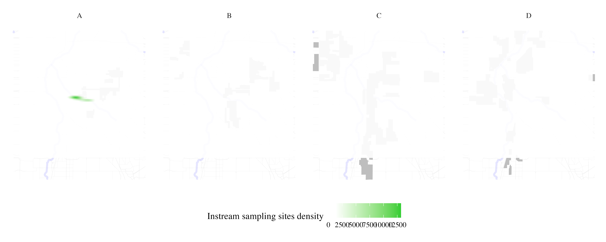
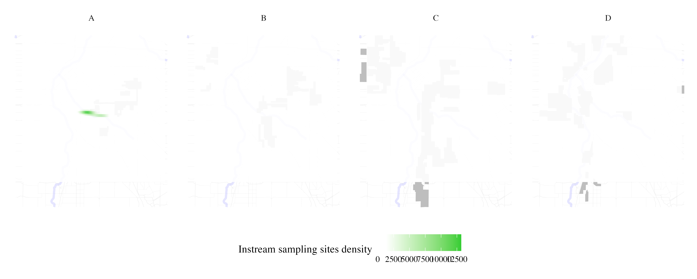
Map soil sampling effort per HOLC grade
soil_samples <- process_city_inventory_data(
"https://www.denvergov.org/media/gis/DataCatalog/soil_samples/shape/soil_samples.zip",
"soil_samples.shp",
denver_redlining,
"Soil samples",
variable_label= 'soil samples density'
)


Map public art density per HOLC grade
public_art <- process_city_inventory_data(
"https://www.denvergov.org/media/gis/DataCatalog/public_art/shape/public_art.zip",
"public_art.shp",
denver_redlining,
"Public art ",
variable_label= 'Public art density'
)


Map liquor licenses density per HOLC grade
liquor_licenses <- process_city_inventory_data(
"https://www.denvergov.org/media/gis/DataCatalog/liquor_licenses/shape/liquor_licenses.zip",
"liquor_licenses.shp",
denver_redlining,
"liquor licenses ",
variable_label= 'liquor licenses density'
)


Map crime density per HOLC grade
Crime <- process_city_inventory_data(
"https://www.denvergov.org/media/gis/DataCatalog/crime/shape/crime.zip",
"crime.shp",
denver_redlining,
"crime",
variable_label= 'Crime density'
)
 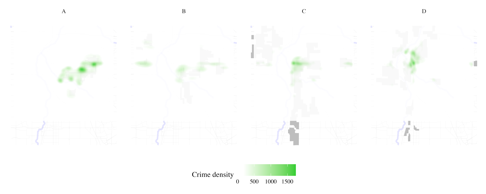
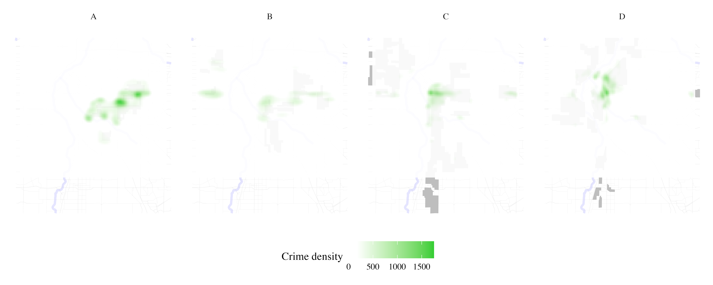
WORD CLOUD: Types of crimes
crime_cloud <- create_wordclouds_by_grade(Crime$layer, output_file = "Crime_word_cloud_per_grade.png",title = "Crime type where larger text is more frequent", max_size =25, col_select = "OFFENSE_TY")

Map police shooting density per HOLC grade
Denver_police_shootings <- process_city_inventory_data(
"https://www.denvergov.org/media/gis/DataCatalog/denver_police_officer_involved_shootings/shape/denver_police_officer_involved_shootings.zip",
"denver_police_officer_involved_shootings.shp",
denver_redlining,
"Police shootings",
variable_label= 'Police shootings density'
)

Not enough data for density across all 4
WORD CLOUD: Police involved shootings
Denver_police_shootings_cloud <- create_wordclouds_by_grade(Denver_police_shootings$layer, output_file = "police_shootings_word_cloud_per_grade.png",title = "police involved shooting per crime type where larger text is more frequent", max_size =35, col_select = "SHOOT_ACTI")
Part 3: Comparative Analysis and Visualization¶
Statistical Analysis¶
- Conduct a detailed statistical analysis to compare greenspace across different HOLC grades, using techniques like Targeted Maximum Likelihood Estimation (TMLE) to assess the association between historical redlining and current greenspace levels.
- Visualize the disparities in greenspace distribution using GIS tools, highlighting how redlining has shaped urban ecological landscapes.
Conclusion¶
This tutorial provides tools and methodologies to explore the lingering effects of historic redlining on urban greenspace, offering insights into the intersection of urban planning, environmental justice, and public health.
References¶
- Nardone, A., Rudolph, K. E., Morello-Frosch, R., & Casey, J. A. (2021). Redlines and Greenspace: The Relationship between Historical Redlining and 2010 Greenspace across the United States. Environmental Health Perspectives, 129(1), 017006. DOI:10.1289/EHP7495. Available online